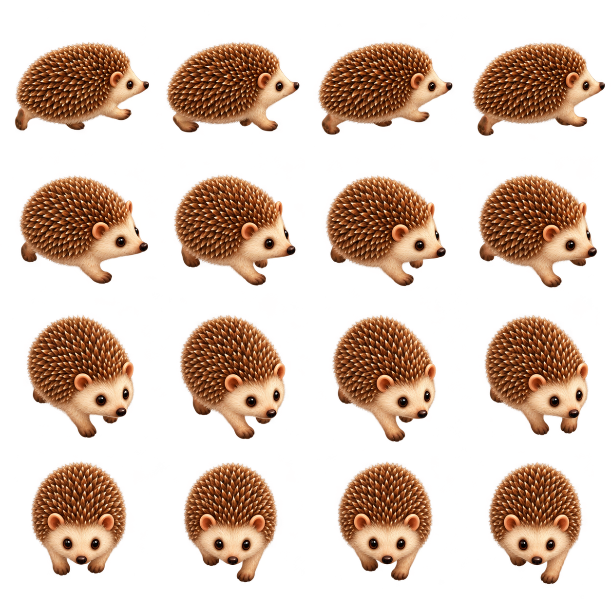
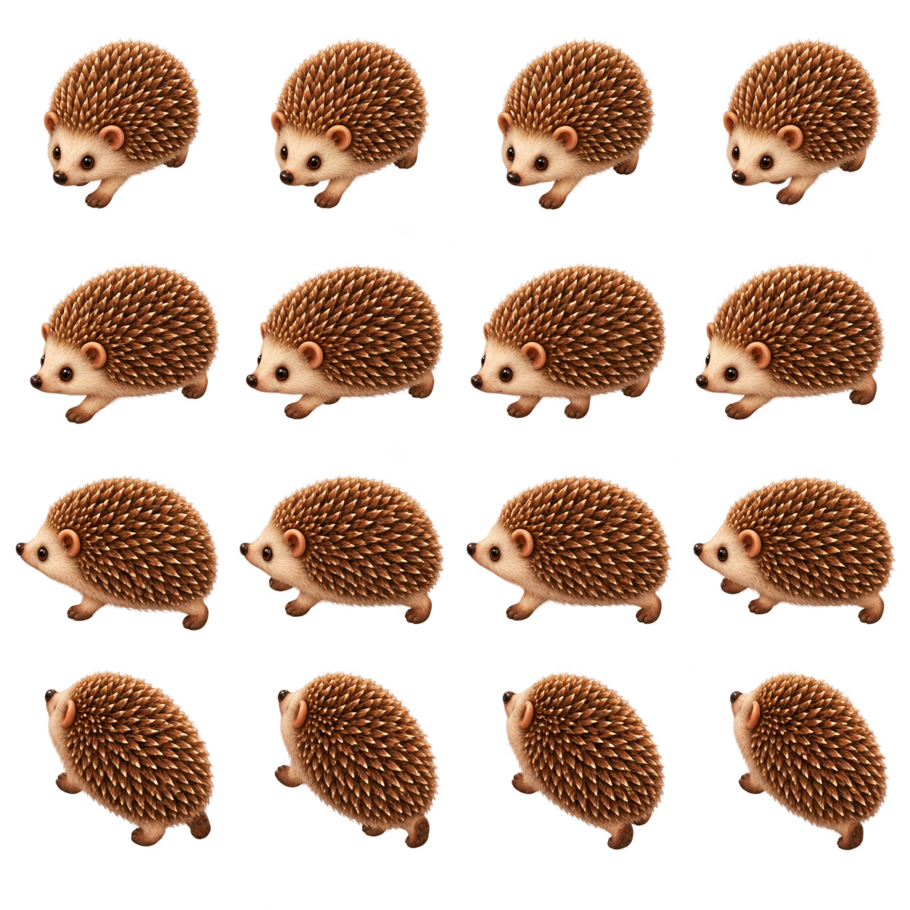
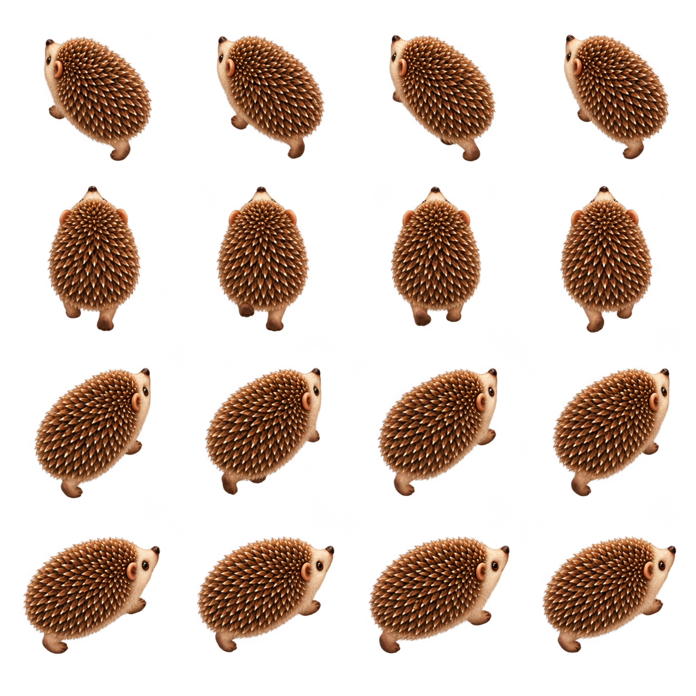

The Shire / Navigation review
The Shire: touch navigation and directional walking
Explore first. Open a book deliberately.
3 of 3 images generated. Local review candidates, not published.
Generation 1 / Reading position 1
Directional walking sheet A
Mr. PinPin follows the atlas paths in the direction of travel.
Camera. Row 1: walking exactly right, right-facing profile (0 degrees). Row 2: walking diagonally right and slightly toward the viewer, nose down-right at 30 degrees. Row 3: walking mostly toward the viewer and slightly right, nose down-right at 60 degrees, more frontal than row 2. Row 4: walking straight toward the viewer, nose toward the image bottom, symmetric front view (90 degrees).

What I See
Four visually distinct heading rows: right profile, shallow front-right oblique, steeper front-right oblique, and centered front/down. Approximate requested azimuth bins 0/30/60/90; exact 30-degree spacing is not measured. Sixteen intact walk frames with true alpha. Red/yellow diagnostic fringe has alpha at most 3/255 and is not visible in the 56-map-pixel atlas composite.
Markdown record · Full-resolution image
{kind=link}
Exact Prompt
Use case: stylized-concept. Asset: transparent RGBA game sprite sheet for a beautiful children's story atlas. Image 1 is the identity/style reference for Mr. PinPin: the same small natural quadruped hedgehog, cream face, warm brown spines, friendly shiny eyes, four short natural paws. Render a 2048 by 2048 square with exactly FOUR ROWS and FOUR COLUMNS, 16 isolated sprites on genuine transparent background. Each cell has the same virtual scale and centered ground anchor, generous clear margins. Fixed elevated 55-degree camera looking down at the animal on a horizontal ground plane; rotate the actual animal's body direction between rows, not the flat artwork. Within each row show four successive clearly different walking gait phases from left to right, alternating fore and hind paws, all with the SAME heading. Soft warm storybook 3D lighting consistent across all cells, detailed fur and spines, crisp silhouette. Keep compact anatomy low to the ground. No text, numbers, grid lines, floor, backdrop, cast shadow or accessories. Heading convention is the direction the nose travels ON THE IMAGE, clockwise: right=0 degrees, toward bottom=90, left=180, toward top=270. Row 1: walking exactly right, right-facing profile (0 degrees). Row 2: walking diagonally right and slightly toward the viewer, nose down-right at 30 degrees. Row 3: walking mostly toward the viewer and slightly right, nose down-right at 60 degrees, more frontal than row 2. Row 4: walking straight toward the viewer, nose toward the image bottom, symmetric front view (90 degrees).
References
- pinpin-walk-v1.png: Character identity and rendering reference
{kind=link}
Generation 2 / Reading position 2
Directional walking sheet B
Mr. PinPin follows the atlas paths in the direction of travel.
Camera. Row 1: walking mostly toward the viewer and slightly left, nose down-left at 120 degrees. Row 2: walking diagonally left and slightly toward the viewer, nose down-left at 150 degrees, more profile than row 1. Row 3: walking exactly left, left-facing profile (180 degrees). Row 4: walking diagonally left and slightly away from the viewer, nose up-left at 210 degrees, rear three-quarter view.

What I See
Four distinct heading rows: steep front-left, shallow front-left, left profile, and rear-left. Requested 120/150/180/210 are approximate bins. The final rear-left pose appears steeper than requested (roughly 225 rather than exact 210), but is visibly less rear-facing/wider than sheet C row 1. A measured clear gutter at y=896 replaces the equal-grid y=940 boundary so all heads remain intact. Sixteen distinct frames; no visible artwork clipping or high-alpha red/yellow fringe.
Markdown record · Full-resolution image
{kind=link}
Exact Prompt
Use case: stylized-concept. Asset: transparent RGBA game sprite sheet for a beautiful children's story atlas. Image 1 is the identity/style reference for Mr. PinPin: the same small natural quadruped hedgehog, cream face, warm brown spines, friendly shiny eyes, four short natural paws. Render a 2048 by 2048 square with exactly FOUR ROWS and FOUR COLUMNS, 16 isolated sprites on genuine transparent background. Each cell has the same virtual scale and centered ground anchor, generous clear margins. Fixed elevated 55-degree camera looking down at the animal on a horizontal ground plane; rotate the actual animal's body direction between rows, not the flat artwork. Within each row show four successive clearly different walking gait phases from left to right, alternating fore and hind paws, all with the SAME heading. Soft warm storybook 3D lighting consistent across all cells, detailed fur and spines, crisp silhouette. Keep compact anatomy low to the ground. No text, numbers, grid lines, floor, backdrop, cast shadow or accessories. Heading convention is the direction the nose travels ON THE IMAGE, clockwise: right=0 degrees, toward bottom=90, left=180, toward top=270. Row 1: walking mostly toward the viewer and slightly left, nose down-left at 120 degrees. Row 2: walking diagonally left and slightly toward the viewer, nose down-left at 150 degrees, more profile than row 1. Row 3: walking exactly left, left-facing profile (180 degrees). Row 4: walking diagonally left and slightly away from the viewer, nose up-left at 210 degrees, rear three-quarter view.
References
- pinpin-walk-v1.png: Character identity and rendering reference
Generation 3 / Reading position 3
Directional walking sheet C
Mr. PinPin follows the atlas paths in the direction of travel.
Camera. Row 1: walking mostly away from the viewer and slightly left, nose up-left at 240 degrees. Row 2: walking straight away from the viewer, nose toward the top, symmetric rear view (270 degrees), see spiny back and short walking hind paws. Row 3: walking mostly away from viewer and slightly right, nose up-right at 300 degrees. Row 4: walking diagonally right and slightly away from viewer, nose up-right at 330 degrees, more right-facing profile than row 3.

What I See
Four distinct heading rows: steep rear-left, centered rear/up, steep rear-right, and shallower rear-right. Approximate requested bins 240/270/300/330; no exact-angle certification. Row 1 is narrower and more rear-facing than sheet B row 4. Sixteen intact walk frames with genuine alpha; red/yellow diagnostic fringe alpha is at most 3/255.
Markdown record · Full-resolution image
{kind=link}
Exact Prompt
Use case: stylized-concept. Asset: transparent RGBA game sprite sheet for a beautiful children's story atlas. Image 1 is the identity/style reference for Mr. PinPin: the same small natural quadruped hedgehog, cream face, warm brown spines, friendly shiny eyes, four short natural paws. Render a 2048 by 2048 square with exactly FOUR ROWS and FOUR COLUMNS, 16 isolated sprites on genuine transparent background. Each cell has the same virtual scale and centered ground anchor, generous clear margins. Fixed elevated 55-degree camera looking down at the animal on a horizontal ground plane; rotate the actual animal's body direction between rows, not the flat artwork. Within each row show four successive clearly different walking gait phases from left to right, alternating fore and hind paws, all with the SAME heading. Soft warm storybook 3D lighting consistent across all cells, detailed fur and spines, crisp silhouette. Keep compact anatomy low to the ground. No text, numbers, grid lines, floor, backdrop, cast shadow or accessories. Heading convention is the direction the nose travels ON THE IMAGE, clockwise: right=0 degrees, toward bottom=90, left=180, toward top=270. Row 1: walking mostly away from the viewer and slightly left, nose up-left at 240 degrees. Row 2: walking straight away from the viewer, nose toward the top, symmetric rear view (270 degrees), see spiny back and short walking hind paws. Row 3: walking mostly away from viewer and slightly right, nose up-right at 300 degrees. Row 4: walking diagonally right and slightly away from viewer, nose up-right at 330 degrees, more right-facing profile than row 3.
References
- pinpin-walk-v1.png: Character identity and rendering reference
Source and Process
Leaflet pan and pinch over the existing map. No new zoom-level imagery. White dashed routes, route-constrained walking at twice the previous speed, one focused book preview.
Existing Atlas
The approved map, segmentation mask and walkable path centerlines are retained.
The previous four-frame sprite is the identity reference for three independent directional sheets.
The Method, in Order
- Generate and record three four-by-four directional sheets.
- Inspect true transparency, grid bounds, headings and gait phases.
- Use the appropriate rendered heading while moving along the path network.
- Test map gestures separately from book preview and story opening.
Directional Sheets
- Directional walking sheet A Row 1: walking exactly right, right-facing profile (0 degrees). Row 2: walking diagonally right and slightly toward the viewer, nose down-right at 30 degrees. Row 3: walking mostly toward the viewer and slightly right, nose down-right at 60 degrees, more frontal than row 2. Row 4: walking straight toward the viewer, nose toward the image bottom, symmetric front view (90 degrees).
- Directional walking sheet B Row 1: walking mostly toward the viewer and slightly left, nose down-left at 120 degrees. Row 2: walking diagonally left and slightly toward the viewer, nose down-left at 150 degrees, more profile than row 1. Row 3: walking exactly left, left-facing profile (180 degrees). Row 4: walking diagonally left and slightly away from the viewer, nose up-left at 210 degrees, rear three-quarter view.
- Directional walking sheet C Row 1: walking mostly away from the viewer and slightly left, nose up-left at 240 degrees. Row 2: walking straight away from the viewer, nose toward the top, symmetric rear view (270 degrees), see spiny back and short walking hind paws. Row 3: walking mostly away from viewer and slightly right, nose up-right at 300 degrees. Row 4: walking diagonally right and slightly away from viewer, nose up-right at 330 degrees, more right-facing profile than row 3.
Measured, Not Estimated
159.2 seconds summed image-call wall time across 3 registered calls. This includes tool waiting, not just model computation. It excludes preparation, review, publishing and any undocumented earlier work. No monetary cost is exposed by these calls.
Records above follow actual generation time. Reading positions are recorded separately. Every attempt has its own filename and record; a retry is not counted as a successful one-shot.
Navigation Policy
Panning, pinching and map taps do not open stories.
A book icon appears only for a clearly focused available destination. Tap it to preview the opening image, then tap that image to read.
Progress changes only when the story is opened. PinPin follows the nearest reachable path without crossing the lake.